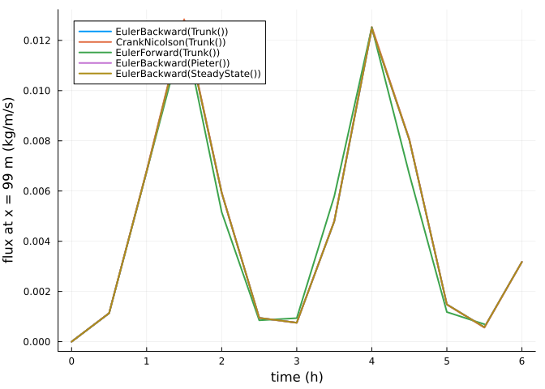

Numerical schemes and solvers
Simon Frost
Overview
The concentration in the air is advanced by a numerical scheme, chosen as the algorithm passed to solve: implicit Euler (EulerBackward, the AeoLiS default), CrankNicolson, or explicit Euler (EulerForward, with the time step limited by the CFL number). Inside a scheme the transport solver is Trunk (an upwind discretisation solved as a sparse linear system), Pieter (a finite-volume form with fluxes on cell faces) or SteadyState (an upwind sweep that finds the equilibrium with the current wind). The sparse systems are solved with LinearSolve.jl, so any of its sparse factorizations can be used.
ENV["GKSwstype"] = "100"
using Aeolis
using LinearSolve
using PlotsA test problem
A beach with a varying wind, so that the concentration is not always in equilibrium:
x = collect(0.0:1.0:100.0)
t = 0.0:600.0:86400.0
wind = hcat(t, 8 .+ 6 .* sin.(t ./ 3000.0) .^ 2, fill(270.0, length(t)))
p = AeolisParameters(; xgrid_file=x, bed_file=fill(1.0, length(x)), wind_file=wind,
grain_size=0.0003, dt=300.0, tstop=6 * 3600.0, output_times=1800.0,
output_vars=[:zb, :qs], CFL=1.0)
prob = AeolisProblem(p)AeolisProblem with tspan (0.0, 21600.0)
AeolisParameters
time: 0.0 to 21600.0 s, dt = 300.0 s
scheme: euler_backward, solver: trunk
fractions: 1, layers: 3
enabled: process_wind, process_transport, process_bedupdate, process_threshold, th_grainsizeSchemes and solvers
algs = ["EulerBackward(Trunk())" => EulerBackward(Trunk()),
"CrankNicolson(Trunk())" => CrankNicolson(Trunk()),
"EulerForward(Trunk())" => EulerForward(Trunk()),
"EulerBackward(Pieter())" => EulerBackward(Pieter()),
"EulerBackward(SteadyState())" => EulerBackward(SteadyState())]
sols = Dict(name => solve(prob, alg) for (name, alg) in algs)
plt = plot(; xlabel="time (h)", ylabel="flux at x = 99 m (kg/m/s)", legend=:topleft)
for (name, _) in algs
s = sols[name]
plot!(plt, s.t ./ 3600, transect(s, :qs)[end - 1, 1, :]; lw=2, label=name)
end
plt
The explicit scheme takes many more steps, since the CFL number limits its time step to the time the wind takes to cross a cell; the solution statistics count the time steps and the matrix solves:
[(name, get(sols[name].stats, :time, 0), get(sols[name].stats, :matrixsolve, 0))
for (name, _) in algs]5-element Vector{Tuple{String, Int64, Int64}}:
("EulerBackward(Trunk())", 73, 73)
("CrankNicolson(Trunk())", 73, 73)
("EulerForward(Trunk())", 232179, 0)
("EulerBackward(Pieter())", 73, 72)
("EulerBackward(SteadyState())", 73, 0)The bed level after six hours differs by less than a millimetre between the time-dependent schemes; the steady-state solver, which ignores the time the concentration takes to adjust, differs by a few millimetres:
ref = transect(sols["EulerBackward(Trunk())"], :zb)[:, end]
[(name, maximum(abs.(transect(sols[name], :zb)[:, end] .- ref))) for (name, _) in algs]5-element Vector{Tuple{String, Float64}}:
("EulerBackward(Trunk())", 0.0)
("CrankNicolson(Trunk())", 1.3388266431046958e-6)
("EulerForward(Trunk())", 0.0006005299166618183)
("EulerBackward(Pieter())", 1.2569002748152869e-5)
("EulerBackward(SteadyState())", 0.005272247071415048)Linear solvers
The trunk and pieter solvers assemble one sparse matrix per fraction and time step and solve it repeatedly while the fraction weights are adjusted to the available sediment; the factorization is reused across these solves. A LinearSolve.jl algorithm can be given with linsolve:
for lin in (nothing, KLUFactorization(), UMFPACKFactorization())
s = solve(prob, EulerBackward(Trunk(); linsolve=lin))
d = maximum(abs.(transect(s, :zb)[:, end] .- ref))
println(rpad(string(something(lin, "default")), 30), " max difference ", d)
enddefault max difference 0.0
LinearSolve.KLUFactorization(true, true) max difference 0.0
LinearSolve.UMFPACKFactorization{@NamedTuple{}}(true, true, NamedTuple()) max difference 1.1102230246251565e-16